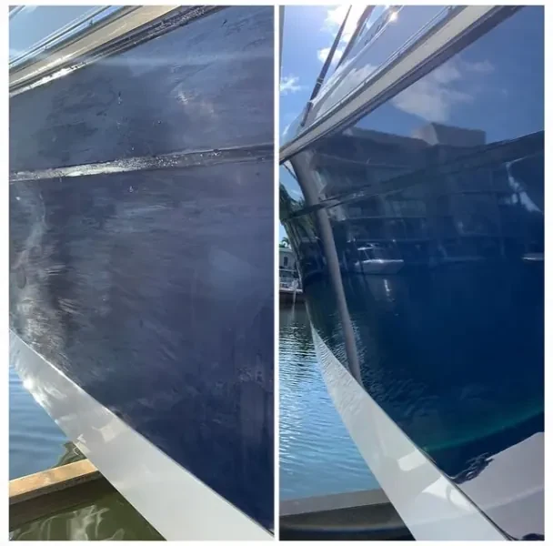

Existe una diferencia crítica entre una embarcación que sale al mar los fines de semana y otra que vive permanentemente en el agua. Para la segunda, el antifouling no es una opción ni un lujo: es la medida de protección más importante que puede tomar el propietario.
En Cartagena de Indias, con aguas del Mar Caribe que oscilan entre 27 y 30 °C durante todo el año y una biodiversidad marina tropical extraordinariamente agresiva, la colonización biológica del casco es un proceso que comienza en días, no en meses. Este artículo explica por qué ocurre, qué consecuencias tiene y cómo la pintura antifouling de calidad profesional detiene ese proceso.
El Enemigo Invisible: Qué es el Fouling y Cómo Ataca
El fouling (o incrustación biológica marina) es la colonización progresiva de la superficie sumergida del casco por organismos marinos. No ocurre de golpe, sino en etapas bien definidas que los biólogos marinos conocen perfectamente:
- Semana 1–2: Biofilm bacteriano. Las primeras bacterias y diatómicas forman una película microscópica invisible sobre el casco. Esta capa, llamada "biofouling primario", actúa como un velcro químico que atrae a organismos más grandes.
- Semana 2–4: Algas filamentosas. Las cianobacterias y algas verdes comienzan a crecer visiblemente. El casco toma una tonalidad verdosa y la resistencia hidrodinámica aumenta de forma medible.
- Mes 1–3: Invertebrados macroscópicos. Briozoos, tunicados y larvas de balanos y mejillones se adhieren. Cada balano adulto produce un cemento biológico cuya fuerza de adhesión supera los 2 kg/cm² — más fuerte que la mayoría de los adhesivos comerciales.
- Mes 3–12: Colonización completa. Una carena completamente incrustada puede acumular varios centímetros de organismos. El peso añadido puede ser de cientos de kilogramos en embarcaciones grandes.
El factor Cartagena: Las temperaturas tropicales del Caribe colombiano aceleran cada etapa de este proceso entre 4 y 8 veces respecto a las aguas del Mediterráneo o el Atlántico Norte. Lo que tarda 6 meses en aparecer en España ocurre en 6–8 semanas en Cartagena.
El Coste Real de No Tener Antifouling
Los propietarios que postergan el antifouling suelen enfocarse solo en el coste del servicio. Rara vez calculan el coste de NO tenerlo. Los números son contundentes:
2–3
nudos de velocidad perdidos con fouling severo
20%
aumento en consumo de combustible
8x
más rápido el fouling en aguas tropicales vs. templadas
6 sem.
tiempo para colonización visible en Cartagena sin protección
Impacto en el Motor y el Combustible
Un casco incrustado obliga al motor a trabajar mucho más para mantener la misma velocidad. Si su yate de 50 pies consume 80 litros/hora a plena carga con el casco limpio, con fouling severo puede consumir 96 litros/hora o más para alcanzar la misma velocidad. En una salida de 8 horas, eso son 128 litros adicionales de combustible. Solo en ese día, el fouling le cuesta más de lo que ahorró al posponer el antifouling.
Daño Estructural al Casco
Más allá del rendimiento, el fouling actaca físicamente el casco. Los organismos incrustantes segregan ácidos orgánicos y compuestos que degradan el gelcoat y la resina epóxica. En cascos de fibra de vidrio, este proceso puede iniciar o acelerar la ósmosis — la absorción de agua por la resina que causa ampollas, delaminación y, en casos graves, pérdida de integridad estructural. Reparar daño osmótico en un casco de 50 pies puede costar entre $15 y $40 millones de pesos. La inversión en antifouling es marginal comparada con esa alternativa.
Devaluación de la Embarcación
Un comprador que inspecciona un casco con daño de fouling o señales de ósmosis restará entre un 15 y un 30 % del valor de tasación sin dudarlo. Un historial de mantenimiento de antifouling documentado es un argumento de venta tangible que protege la inversión a largo plazo.
Por Qué las Embarcaciones Permanentes en el Mar son las Más Vulnerables
Las embarcaciones que solo salen los fines de semana tienen algo que protege parcialmente su casco incluso sin antifouling: el movimiento del agua al navegar crea fricción que arranca las primeras etapas del fouling. Una embarcación que avanza a 15 nudos ejerce suficiente turbulencia sobre la carena para dificultar la adhesión de larvas.
Una embarcación permanentemente amarrada o fondeada no tiene ese aliado. La carena pasa días y semanas completamente inmóvil en agua caliente, a menudo en zonas de baja corriente como marinas cerradas o bahías protegidas. Las condiciones son perfectas para el fouling y terribles sin antifouling.
Regla de campo: En Cartagena, una embarcación permanente en el agua sin antifouling debe contar con que necesitará un varado de emergencia para limpieza agresiva de carena y re-aplicación de pintura antes de 3–4 meses. Ese varado inesperado suele costar más que el mantenimiento preventivo planificado.
Las Dos Marcas Que Usan los Profesionales en el Caribe
No todos los antifoulings son iguales. En el mercado colombiano circulan pinturas de procedencia dudosa y rendimiento insuficiente para las condiciones del Caribe. En Colombia Boat Detailing trabajamos exclusivamente con las dos marcas que definen el estándar mundial de la industria marina:
1. International Paint (AkzoNobel) — La Marca Nº1 del Mundo
Con más de 130 años de historia y presente en más de 100 países, International Paint es la empresa de pinturas marinas más vendida globalmente. Sus productos son la referencia que usan los astilleros de superyates, flotas de charter del Caribe y constructores navales para embarcaciones de recreo de alta gama.
Para embarcaciones permanentes en el mar en Cartagena, destacamos dos productos de su catálogo:
- Interspeed 640: antifouling de alto espesor formulado específicamente para cascos que permanecen en el agua de forma continua. Su alta carga de óxido cuproso proporciona protección intensa durante hasta 24 meses en aguas tropicales cálidas. Ideal para yates de fondeo permanente, veleros oceánicos y embarcaciones de pesca deportiva.
- Micron Extra: tecnología auto-pulimentada de copolímero (SPC). La capa de pintura se desgasta de forma controlada y precisa, liberando biocidas de manera uniforme durante toda la vida de la pintura. La solución de mayor rendimiento para yates que combinan fondeo largo con navegación oceánica.
2. Hempel — La Ingeniería Danesa al Servicio del Mar
Fundada en Copenhague en 1915, Hempel es el proveedor de confianza para las principales flotas navales, puertos y astilleros de Europa, el Mediterráneo y el Caribe. Su departamento de I+D desarrolla continuamente fórmulas adaptadas a biomas marinos específicos, incluyendo el Caribe tropical.
- Hempel Mille NCT 7185: antifouling de copolímero de última generación sin tributilestaño. Liberación de biocidas mediante hidrólisis controlada por el pH del agua marina, lo que garantiza una tasa de desgaste constante independientemente de si la embarcación navega o está amarrada. Protección comprobada de 24–36 meses.
- Hempel Olympic Plus: formulación ablativa de alta carga de cobre para aguas con fouling tropical agresivo. La opción que recomendamos para embarcaciones que pasan periodos largos en fondeos de la bahía de Cartagena, archipiélago de las Islas del Rosario o costas de Barú, donde la presión biológica es máxima.
¿Cómo elegimos el producto correcto? Antes de aplicar, evaluamos el tipo de casco (fibra, aluminio, acero), el historial de capas anteriores, el tiempo estimado de permanencia en el agua y las zonas de navegación habituales. International Paint para alta rotación y navegación; Hempel para fondeo continuo en zonas biológicamente activas. Consultamos antes de comprar.
La Preparación es el 70 % del Resultado
Uno de los errores más comunes que vemos en el sector es pintar antifouling sobre una carena mal preparada. El mejor antifouling del mundo falla si se aplica sobre grasa, salitre incrustado, capas viejas descascaradas o una superficie con porosidades.
El proceso profesional que aplicamos en Colombia Boat Detailing comienza siempre con:
- Descontaminación química: lavado de alta presión (250 bar) con agentes desengrasantes marinos. Removemos salitre, aceites, biota adherida y residuos que contaminarían la adherencia de la nueva pintura.
- Lijado integral: lijado mecánico con granos progresivos (80 → 120 → 180) para crear el perfil de adherencia correcto sobre el gelcoat o la capa de antifouling anterior compatible. Sin este paso, la nueva capa se desprenderá prematuramente.
- Primer marino: aplicamos International Primocon o Hempel Underwater Primer 12450 como capa de adhesión entre el casco y el antifouling. Crítico en cascos de aluminio o acero y cuando se cambia de marca.
Solo después de esa preparación completa aplicamos el antifouling en 2–3 capas con los tiempos de reposo controlados entre manos. El resultado: una carena perfectamente protegida que cumple los 24–36 meses prometidos por el fabricante.
¿Cuánto Cuesta el Antifouling Profesional en Cartagena?
Trabajamos con un precio transparente por pie de eslora que incluye absolutamente todo el proceso descrito arriba. No hay costes ocultos ni materiales facturados por separado.
$240,000 COP por pie de eslora. Ejemplo práctico: un yate de 50 pies tiene un coste total de $12,000,000 COP por el servicio completo (descontaminación + lijado + primer + 2–3 capas antifouling con International Paint o Hempel).
El varado e izamiento en astillero se cotiza por separado según el tonelaje y el astillero disponible. Le ayudamos a coordinarlo.
¿Cada cuánto tiempo hay que repetirlo? En Cartagena, para embarcaciones permanentes en el agua, recomendamos aplicación anual (cada 10–12 meses) con pinturas estándar, o cada 18–24 meses con los productos SPC premium de International Paint o Hempel correctamente aplicados. Combine con lavados técnicos cada 3 meses para maximizar la vida útil del antifouling.
Conclusión: El Antifouling no es un Gasto, es una Póliza de Seguro
Si su embarcación vive en el mar en Cartagena, el antifouling con marcas profesionales como International Paint o Hempel, aplicado con la preparación correcta, es la inversión de mantenimiento con mayor retorno que puede hacer. Protege la velocidad, el consumo de combustible, la integridad estructural del casco y el valor de reventa de su embarcación.
El coste de no hacerlo —combustible extra, reparaciones de casco, varados de emergencia— supera con creces el coste del servicio preventivo. Los números no mienten: un yate de 50 pies con fouling severo puede gastar más combustible adicional en un año de lo que cuesta el antifouling completo.
¿Lista su embarcación?
Solicite su Presupuesto de Antifouling
Díganos los pies de eslora y el tipo de embarcación. Le damos presupuesto inmediato por WhatsApp. $240,000/pie · todo incluido.
Artículos Relacionados
Servicio
Pintura Antifouling Profesional en Cartagena
Desde $240,000/pie. Descontaminación, lijado, primer y antifouling premium con International Paint y Hempel.
Blog
Pintura Antifouling para Yates: Cuándo y Qué Usar
Guía sobre tipos de antifouling, frecuencia de aplicación y productos recomendados para el Caribe colombiano.
Blog
¿Cada Cuánto Limpiar el Casco?
Frecuencia recomendada de limpieza de carena según tipo de embarcación y uso en Cartagena.
Blog
Señales de Alerta de Fouling en su Yate
Cómo identificar a tiempo si el fouling está afectando el rendimiento de su embarcación.